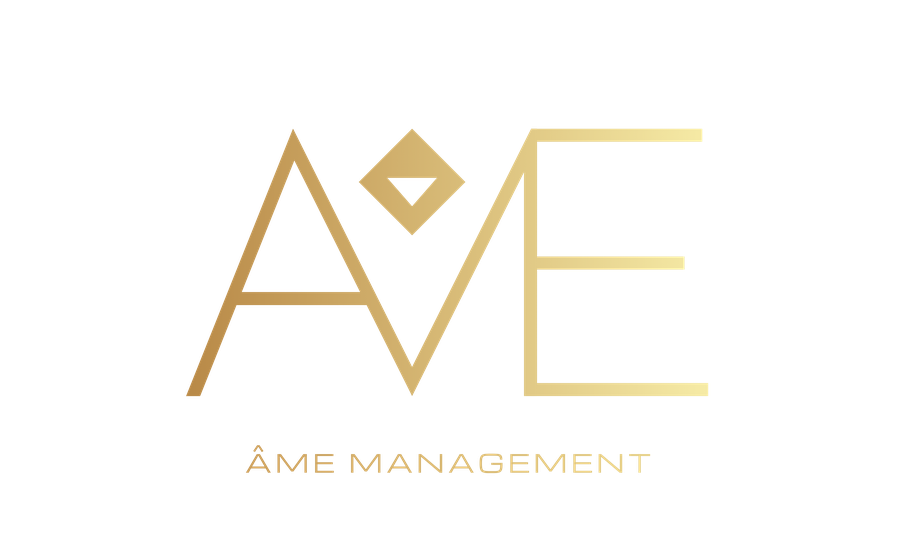
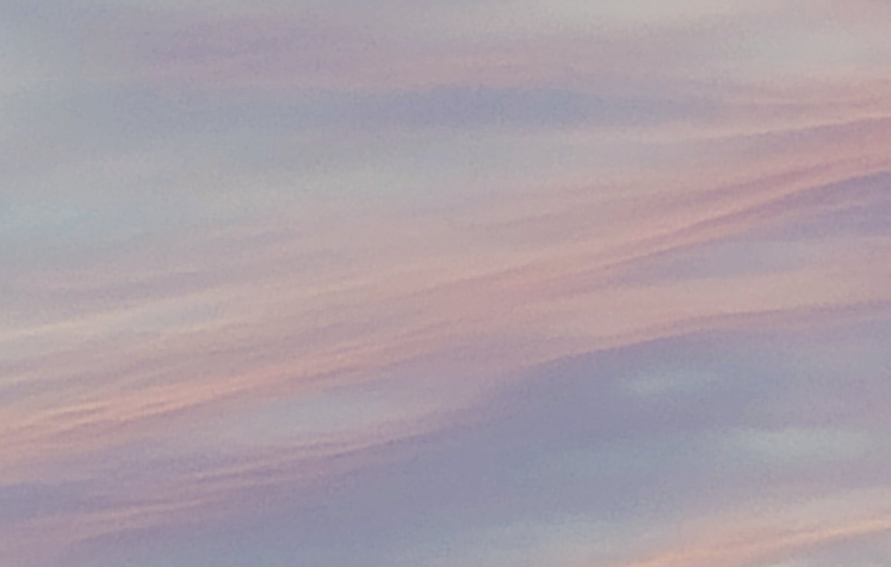

Les carnets d’Amy Awen
Dix carnets guidés de quatre-vingt-dix jours. Chacun emprunte sa sagesse à un endroit du monde, et propose le même chemin : une question par jour, cinq minutes, à ton rythme.
Le propos
Tu réponds, tu ranges, tu anticipes, tu souris au bon moment. C’est efficace. Et c’est exactement ce qui t’a éloignée de ta propre vie.
Il faut un jour lâcher ses automatismes pour se retrouver, et retrouver le monde autour : regarder à nouveau, s’étonner, prendre son temps. Comme la petite fille qu’on était.
On a toutes besoin, un jour, d’une muse ou d’un guide. Ces carnets ne disent pas quoi faire. Ils rappellent d’écouter.
Autrefois, on écoutait les femmes qui voyaient plus loin — la völva du Nord, celle qui lisait les signes, les saisons et les silences. Ce regard-là ne s’est pas perdu.

Regarder à nouveau. S’étonner. Prendre son temps.
Photographie d’Amy
La collection
Chamanisme, völva, taoïsme, runes et mythes : chaque carnet puise dans une sagesse différente, et garde la même structure en treize étapes.
La méthode
Ici, aucune série ne se casse. Un jour plein, un jour doux, un jour blanc : aucun ne retire rien aux autres.
« Autrefois, on écoutait les femmes qui voyaient plus loin. »
Anthos · Grèce antique · à paraître
Amy Awen
« Tu n’es pas fatiguée parce que tu fais trop. Tu es fatiguée parce que tu n’y es plus. » Première page de chaque carnet
Amy Awen est un nom de plume. Derrière, une femme qui a longtemps pris soin de tout sauf d’elle-même, et qui a fini par poser sur le papier ce qu’elle aurait voulu qu’on lui dise.
Elle ne prétend pas avoir trouvé seule. Une muse l’a guidée — une voix qui ne jugeait rien, et qui lui rappelait d’écouter quand elle n’entendait plus. Ces carnets sont la façon de passer ce rappel plus loin.
Elle écrit comme on parle à une amie : sans jargon, sans promesse de guérison, sans petits défis ni cases à cocher. Treize enseignements par carnet, chacun suivi d’une phrase qu’elle signe de son prénom.
La Muse
La même narratrice revient, épisode après épisode. Une affirmation qui arrête le pouce, trois fragments, une phrase qui rassure, et une question laissée ouverte.
Le fil
Ce qu’on publie, ce sont les carnets eux-mêmes. Pas de fond pastel avec une phrase dessus.
En préparation
Le carnet continue ailleurs : quelque chose qui grandit un peu chaque jour, et une muse qui accompagne.
Pas encore de date
L’application se construit lentement, comme le reste. Elle sortira quand elle sera juste, pas quand le calendrier le demandera.